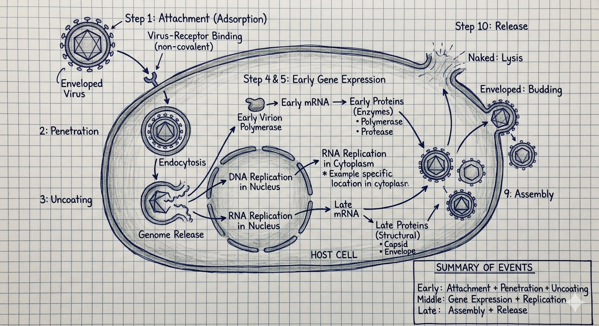

Write down the steps of viral replications. ********
- Attachment (Adsorption) – viral ligand binds to host cell receptor (non-covalent).
- Penetration – by endocytosis / pinocytotic vesicle.
- Uncoating – capsid removed, genome released into cell. Naked virus: vesicle ruptures. Enveloped virus: fusion with vesicle membrane.
- Early Transcription – early mRNA synthesis. DNA virus: host DNA-dependent RNA polymerase. (+) RNA virus: genome acts as mRNA. (–) RNA virus: virion RNA polymerase.
- Early Translation – early proteins = enzymes (polymerase, protease).
- Genome Replication – DNA: nucleus (except Pox in cytoplasm). RNA: cytoplasm (except Orthomyxo/Retro/Delta in nucleus).
- Late Transcription – late mRNA synthesis.
- Late Translation – late proteins = structural (capsid, envelope).
- Assembly – genome + structural proteins → progeny virions.
- Release – Naked: lysis. Enveloped: budding (Herpes→nuclear membrane; Corona→ER).
Summary: Early events = attachment + penetration + uncoating. Middle = gene expression + replication. Late = assembly + release.

Viral replication-এর ধাপগুলো কী কী?
Attachment → Penetration → Uncoating → Early transcription → Early translation → Genome replication → Late transcription → Late translation → Assembly → Release।
Attachment কীভাবে হয়?
Viral ligand non-covalently host cell receptor-এ bind করে। এটি tropism নির্ধারণ করে।
Eclipse period আর latent period-র পার্থক্য কী?
Eclipse: entry থেকে new virion তৈরি হওয়া পর্যন্ত। Latent: infection থেকে extracellular virus appearance পর্যন্ত।
Release-এ naked আর enveloped virus-র পার্থক্য কী?
Naked virus cell lysis দিয়ে বের হয় — cell destroyed। Enveloped virus budding দিয়ে বের হয় — cell প্রাথমিকভাবে survive করতে পারে।
Replication-এ first attachment — virus-র ligand host receptor-এ bind করে। তারপর penetration, uncoating। Early transcription-এ mRNA, early translation-এ enzyme বানায়। Genome replicate হয়। Late mRNA আর structural protein তৈরি হয়। Assembly, then release — naked cell lysis করে, enveloped budding দিয়ে বের হয়।
Attachment-ই virus-র tropism determine করে। Naked virus-এ capsid directly receptor-এ bind করে। Enveloped virus-এ spike protein bind করে।
Early proteins enzymes (polymerase, protease) — replication-এ লাগে। Late proteins structural (capsid, envelope) — virion-এ যায়।